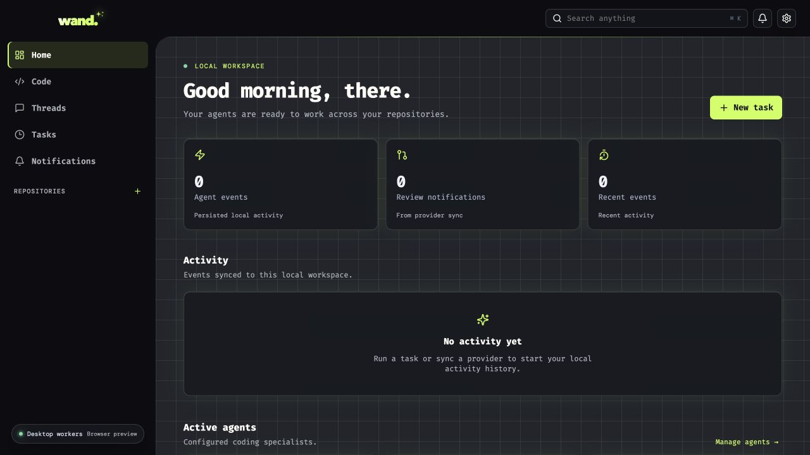
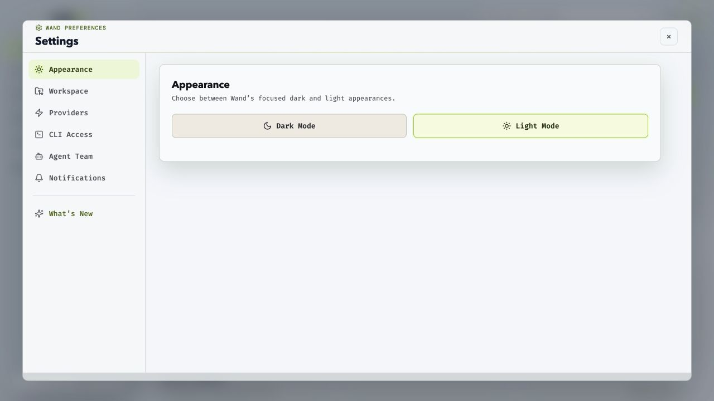
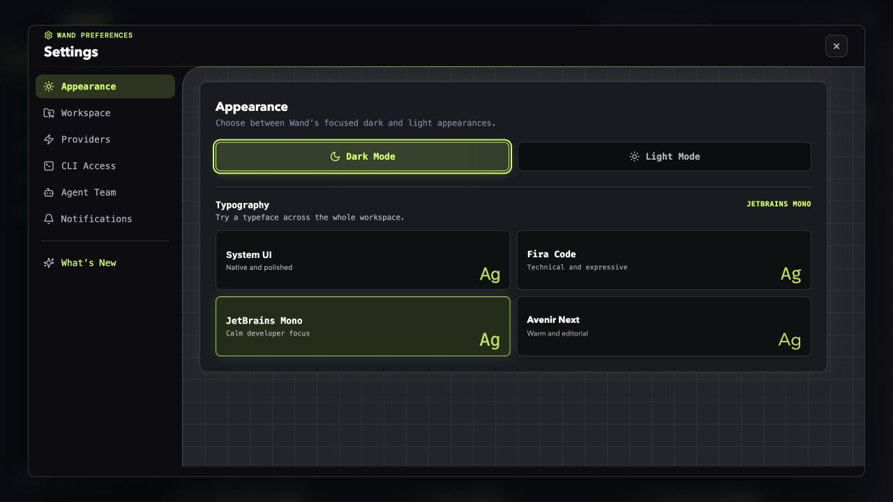
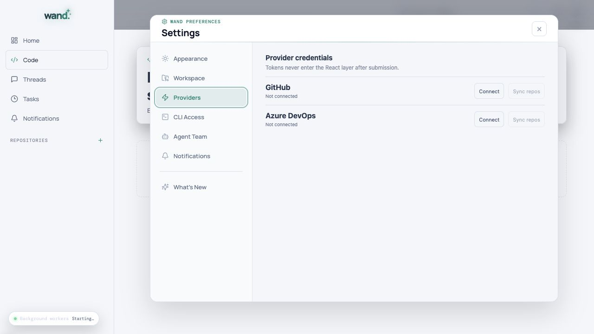
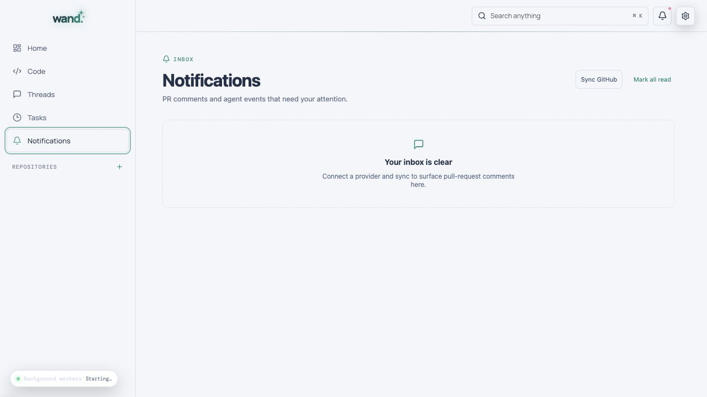

01
Repository context that sticks
Every repository gets its own tasks, threads, agent scope, activity history, and diff surface.

Local-first agent workspace
Bring your repositories and coding CLIs together. Give specialists a task, follow their handoffs, and review the result—all in one desktop app.

A home for your repositories, agents, and review history.Earlier beta preview
01 Local repositories
02 Every handoff stays visible
03 Explicit agent runtimes
How it works
Give each specialist a clear role. Wand keeps the work, the handoffs, and the evidence attached to the repository that matters.
Turn the task into an ordered approach with the right repository context.
PLANNERUse an enabled Claude, Codex, Kimi, or Gemini CLI with its own model and responsibility.
BUILDERInspect diffs, provider activity, and the reasoning passed between stages.
REVIEWERLet a separate verification stage check the result. Review its evidence before accepting changes.
SENTINEL09:41:02PLANNER Scope confirmed · 4 files
09:41:18BUILDER Implementation in progress
09:42:07REVIEWER Diff received · checking boundaries
09:42:31SENTINEL Running final verification
The workspace
Every repository gets its own tasks, threads, agent scope, activity history, and diff surface.
Settings stay in one spacious modal for appearance, workspace, providers, CLI access, agents, and notifications.

Scheduled runs, sync events, notifications, and handoffs land in one readable timeline.
Two considered appearances
Choose your appearance in Settings. The website also follows your system preference, with a switch at the top to make it your own.
Clear surfaces for a bright workspace.

The same settings layout in deep charcoal.
Inside Wand
Tasks, activity, provider events, and agent handoffs stay close to the code instead of disappearing across tools.
Screenshots from earlier beta builds. The current app is evolving; see release notes for changes.




Privacy & control
Wand stores workspace history locally and provider credentials in your operating system’s credential manager. Coding CLIs may send code and prompts to their model providers; their authentication and data policies still apply.
Read the security policyInstallation-scoped secrets stay in Keychain, Credential Manager, or Secret Service.
File operations are resolved against registered local repositories.
The updater verifies release signatures and asks for approval before installation. Updater signing is separate from OS notarization.
CLI access is explicit, allowlisted, and attached to a task history.
Download Wand
Choose your processor and platform. Each installer links to the latest published GitHub Release, which may trail changes on main.
Installer links open GitHub Releases if a direct download cannot be resolved.
Already have a coding CLI? Enable it in Wand’s Settings after installation. A supported CLI account and model are required to run agents.
On macOS, open the DMG and drag Wand into Applications. On Windows, run the MSI. On Linux, make the AppImage executable and open it.
Choose your repositories folder in Settings. Enable an installed coding CLI and select a model your account can use.
Open a repository and write a post. Type @ to choose an agent, then follow its replies and verification on that post.
Before you start
Yes. Install and authenticate a supported coding CLI—Claude, Codex, Kimi, or Gemini—then enable it in Wand’s Settings. Your CLI account determines which models you can use and any provider charges.
No. Schedules run on your machine, so Wand needs to be running and your computer awake. You can inspect run history in Tasks.
No. Wand keeps workspace history locally, but a coding CLI may send prompts and code to its model provider. Review that provider’s policies and your CLI permissions before using sensitive repositories.
Open the Apple menu and choose About This Mac. If Chip lists an Apple M-series chip, choose Apple Silicon. If Processor lists Intel, choose the Intel installer.
Wand is in beta. Open a GitHub issue with your operating system, Wand version, and steps to reproduce. Remove tokens, private code, and personal information from logs or screenshots.